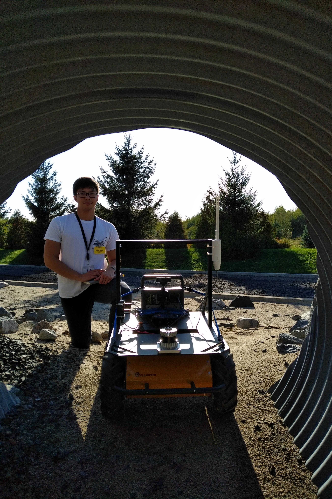

The task: find "new" and "interesting" rocks. The destination: Mars Yard. The vehicle: Husky rover. The mission: Moonbot!
The slightly misnamed project was undertaken by myself, Matt Cross, and Lauren Flanagan last November 2019 at the Canadian Space Agency's Analogue Terrain Facility, otherwise called the Mars Yard. The goal was to use the rover and gather as much data as possible for subsequent analysis back at Western. Overall, there are three studies that we were trying to conduct: 1) finding "new" and "interesting" rocks from the perspective of the rover, 2) Finding rocks we have seen before from panorama images, and 3) using Lidar data for autonomous navigation.
The Husky rover
Before talking about the tasks, let's talk about the rover first. 
The Husky rover is a commercial-off-the-shelf rover purchased from Clearpath Robotics. It is a highly configurable and ruggedized vehicle that is capable of carrying multiple scientific equipment in different kinds of terrain. For this project, we equipped the Husky with a Lidar scanner, a web camera, and onboard computer, and a battery to power it all. To control the Husky, we used a software developed by Mission Control Space Services. This allowed us to remotely control the rover from a "mission control room" and pretend that we're actually doing a space mission. Which, not gonna lie, felt incredible at the time.
We also needed to configure the onboard computer to allow it to talk to the mission control software and interface with all of the scientific equpment. All of which are happening concurrently. For instance, we are able to control the rover while it is sending images/video feed to the mission control software. At the same time, we are able to take Lidar scans while navigating the rover around obstacles. To do so, we implempented a robotics framework called ROS (Robot Operating System) on the onboard computer. It is a framework that mimics a real-time operating system, which allows for concurrent inputs and outputs to and from the system. Without it, we would only be able to do one thing at a time, and that's not really how robots should work.
Novelty Detection
My part of the project is using rover imagery for novelty detection. Essentially, this translates to finding "new" and "interesting rocks" that we might not have seen before.
Imagine a scenario where a rover is deployed in a new and distant environment (it could be Mars, the Moon, anything!). Let's say for example that from past missions on this particular planetary body, we know what type of rocks already exist in the area. That is, we have some images already taken on the ground and we have had some time to analyze it. If the rover encounters a new rock we have never seen before, we would want to help the scientists and point out the existence of this new and interesting rock. After all, this new rock might be important for the mission. However, the problem lies in the communication delays between rovers in distant planetary objects and the operators at Earth in that it takes a long time to send images back to Earth. As well, it takes time for the scientists to analyze all the images that come in from the rover. The worst case scenario is if the rover drives past a new and interesting rock.
To solve this problem, we could implement algortithms on the rover's onboard computer such that it will be able to alert the scientists if there is something of interest in the image it has just taken. This way, the rover could send back this image right away, and have a scientist take a look at it. This will speed up the data turn around and will help with overall mission success.
To simulate this situation, we drove the rover around and took pictures of all the rocks and outcrops present in the Mars Yard. We can pretend that one of the rocks is "new" and "interesting" and design an algorithm such that we can flag images of these rocks. The research is still ongoing but initial results look promising!

Rocks present in the Mars Yard (I just invented names for them): black pebbles, flagstone, grey pebbles, half wall, rubble pile, tunnel rubble